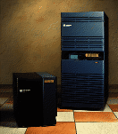

Power Challenge M, L, XL
Power Challenge familien består av 3 servere. Serverene egner seg best som
beregningsservere (tungregning).
En Power Challenge M server kan ha opptil 768 MB RAM og 80 GB disk.
En Power Challenge L server kan ha opptil 6 GB RAM og 2,2 TB disk.
En Power Challenge XL server kan ha opptil 16 GB RAM og 3 TB disk.
Power Challenge familien leveres med 75 MHz R8000 CPUer.
Et CPU kort til Power Challenge L kan leveres med 1, 2 eller 4 CPUer.
Et CPU kort til Power Challenge XL kan leveres med 2 eller 4 CPUer.
Power Challenge M har en systembuss på hele 267 MB/s.
Power Challenge L og XL har en systembuss på hele 1,2 GB/s (sustained).
Maksimal I/O båndbredde er 960 MB/s for Power Challenge L (3 stk I/O kort).
Maksimal I/O båndbredde er 1,2 GB/s for Power Challenge XL (4 stk I/O kort).
Båndbredden i Power Challenge M er mellom CPU og memory er på 400 MB/s.
Båndbredden i Power Challenge L og XL er mellom CPU og cache og CPU
og memory er på hele 1,2 GB/s pr. CPU.
En Power Challenge leveres med et I/O (Power Channel) kort som har følgende
porter :
Dette er kun noen av de vanligste ytelsestallene for servere
(tallene gjelder pr. CPU):
75 MHz R8000
Oppdatert, 7. april 1995